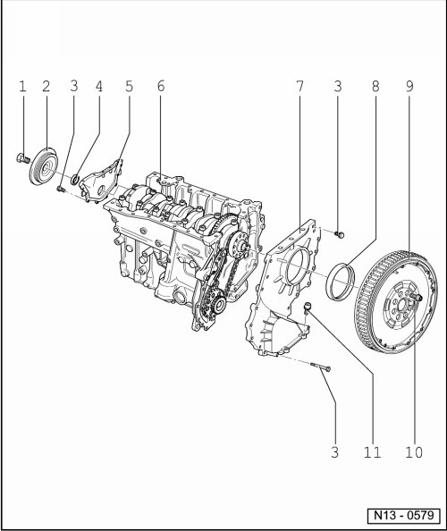

Crankshaft Seal Retainer: Service and Repair
Sealing Flange, Assembly Overview

1 100 Nm + 1/2 turn (180°)
• Replace
• Use counter-holder tool (T10069) for loosening and tightening --> [ To Loosen and Tighten Bolt, Lock Vibration Damper
using ] Service and Repair
• Tighten using torque wrench (V.A.G 1601)
2 Vibration damper
• Removing and installing ribbed belt --> [ Ribbed Belt ] Ribbed Belt.
3 10 Nm
4 Seal
• Replacing --> [ Oil Seal, Vibration Damper Side ] Oil Seal, Vibration Damper Side.
5 Sealing flange
• Coat sealing surfaces with sealant (D 176 501 A1)
6 Cylinder block
• Removing and installing crankshaft --> [ Crankshaft, Assembly Overview ] Crankshaft, Assembly Overview.
• Piston and connecting rod, disassembling and assembling --> [ Piston and Connecting Rod, Assembly Overview ] Service and Repair.
7 Sealing flange
• Coat sealing surfaces with sealant (D 176 501 A1)
8 Seal
• Remove using pulling hook (T20143/2)
• PTFE version of oil seal
• Identification: no inner coil spring
• Do not additionally oil or grease sealing lip of oil seal
• Before installing, remove oil remains from crankshaft journal with a clean cloth
• Replacing --> [ Oil Seal, Flywheel Side ] Service and Repair.
9 Dual mass flywheel/drive plate
10 60 Nm + 1/4 turn (90°)
• Replace
• To loosen or tighten, use counter-hold (T10044) (with 5 mm spacers), or counter-hold (T10069).
11 25 Nm